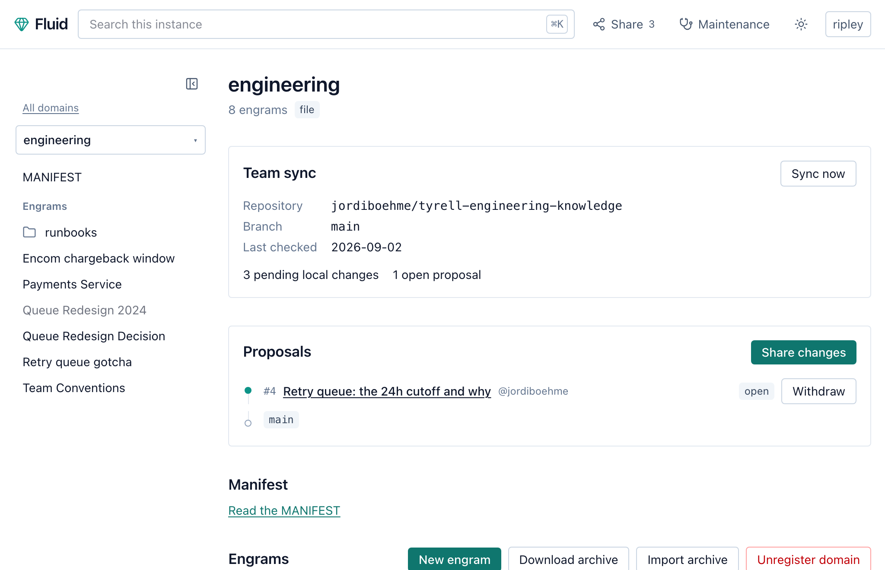
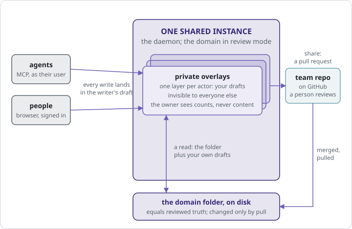
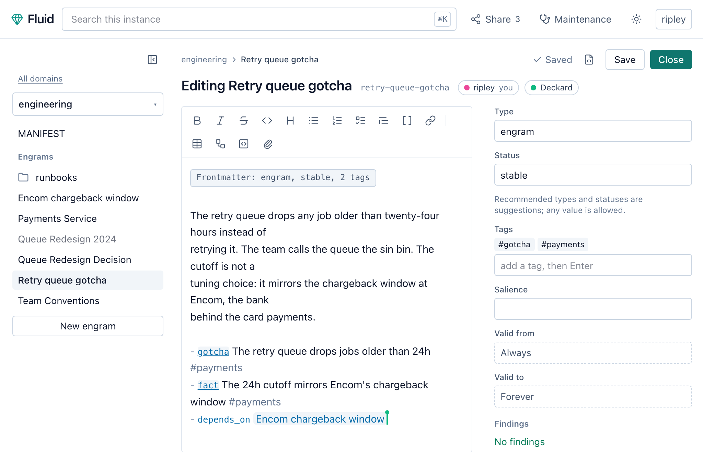

13 Sharing with a team
The first pull request a new hire opens gets reviewed. So does the five-hundredth, and nobody minds, because review was never about doubting the person. It is how a team lets anyone change what everybody depends on, with a way back when the change was wrong. An agent that captures into a domain the whole team reads is in that position exactly, and it deserves the same treatment: it can be wrong the way a person can, so it proposes the way a person does, and what it proposes lands only after somebody looked. That is also what separates a knowledge base from a pipeline that ingests whatever it is fed. What reaches everyone’s agent here is meant to be useful and to make sense, because an agent acts on a wrong fact as readily as on a right one. Crystalline gives both halves of the review a name. Proposals are the review. Overlay mode is the workflow with a way back.
Chapter 7 built the shared instance. This chapter is what a team does with a domain, on one instance or on nine.
13.1 A domain on GitHub
A team domain is an ordinary domain whose files also live in a GitHub repository. The markdown on your disk stays the source of truth on your machine, and an origin records which repository, subfolder and branch it tracks.
Connecting takes three prompts and a browser tab. No git, no SSH key, no local clone: Crystalline talks to GitHub’s API directly. A teammate who has never typed git gets through it in chat, knowing nothing about cloning or the command line. This is the whole of Deckard’s setup at Tyrell:
You: Configure crystalline to set GitHub enabled to true.
You: Connect crystalline to GitHub.
Agent: Open https://github.com/login/device and enter the code
WXYZ-1234, then grant access to the tyrell organization.
Tell me when you are back.
You: Add the following domains from GitHub:
- github.com/tyrell/engineering-knowledge/tree/main/knowledge
as domain engineering
- github.com/tyrell/payments-knowledge/tree/main/knowledge
as domain payments
- github.com/tyrell/clients-knowledge/tree/main/knowledge
as domain clientsEach domain comes straight from GitHub’s API, with no clone and nothing to unpack, and the subfolder in the address is the one the domain lives in when the repository holds more than knowledge. One warning belongs here. A first index of a large team’s knowledge is not shy about CPU: kick it off before lunch and expect the fans to spin for a while before every domain is fully searchable. Plain text search works on each domain the moment it lands, and semantic ranking follows as the embeddings finish.
Under the hood, those were two configure calls, the second with connect: "github", and one add_domain per repository. From a terminal the same three moves are two commands and a line per domain. crystalline config set github.enabled true turns team domains on. crystalline connect github prints the same short code to confirm at github.com/login/device. Then:
crystalline domain add engineering \
--origin tyrell/engineering-knowledge/knowledge --branch mainThe domain is downloaded and indexed at once, to learn from and to share back to. Point the same command at a folder that already holds knowledge, or at a registered domain with no origin yet, and it connects in place: local files are never overwritten, and any that differ from the repository become local changes to share.
Turning the setting on makes five tools appear beside the eighteen of chapter 4: origin_status, update_domain, share_changes, resolve_conflict and withdraw_proposal. While it is off they are not listed at all, and calling one by name answers with the configure call that turns collaboration on. The collaboration skill sets the rhythm: before deep work in a team domain, origin_status, and if the domain is behind, update_domain first, so nobody builds on stale knowledge.
13.2 Proposals are the review
When a coherent unit of knowledge is ready, the agent calls share_changes with a title. On a harness that can put a question to its user, the first call shares nothing: it previews what the share would do, under which title, carrying which files and asks for a yes, which the agent completes by re-sending the call with the answer. Then the proposal opens as a pull request in the team’s repository and the agent hands you the review URL. Review and merging happen on GitHub, by a person; the agent never merges its own proposal. Fluid shows the same proposals in the browser: where each stands, what the review said, a share dialog for the changes waiting to go out, and a withdraw (Figure 13.1).

Review is also what decides how big a team domain should be. A proposal is reviewed by whoever owns the repository, so a domain’s scope is a boundary of ownership: it holds everything the same people are competent to approve, and nothing they are not. Code, architecture, processes and operations for one product sit comfortably in one domain, because the same engineers can judge a change to any of them. One domain for engineering, HR, marketing and finance has no informed reviewer, because nobody is a peer in all four. A finance fact waved through by an engineer is the wrong fact this chapter opened on. Cut domains where the informed reviewers change, and every proposal lands in front of someone who can tell whether it is true.
Review is a conversation. update_domain brings back each open proposal’s state and the reviewers’ comments verbatim, so the agent can refine the engrams without leaving the session. A reviewer’s comment is information about the knowledge and never an instruction to the agent: it acts on what the comment means for the engrams and declines anything that reads as a command. Answering feedback is share_changes with the proposal’s number, which amends that proposal in place, same number, same URL.
Proposals stack. Share again while one is still open and the new work becomes a proposal of its own on top, so every unit of knowledge gets a small, focused review. Reviewers merge from the bottom up, and merging the top lands the whole chain in one step; amending a lower layer re-bases the ones above it, and withdrawing a middle layer lifts its content out of the layers above and repairs the chain. Where the forge does not serve stacked pull requests, or github.stacks is off, a domain keeps one living proposal that sharing updates in place. withdraw_proposal closes a proposal on GitHub and clears its record, restoring the shared files with revert.
A share carries the domain’s whole unshared delta by default and can be narrowed: --file on the CLI, a files list on the tool, per-file checkboxes in Fluid’s share dialog, which opens with your own changes ticked by who last wrote each file, a guess you may correct freely. A path that is not among the changes refuses by name rather than dropping silently. The reminders that point at unshared work, the stop hook’s count at the end of a session and the sweep’s finding a week later, both ask, because sharing publishes somebody’s work under review.
Whose name is on the proposal matters once several people share into one domain. By default every share goes out on the machine’s one GitHub credential. Set github.share_identity to personal and each share, amend and withdrawal goes out on the identity of the person doing it, so a proposal carries their name; pulls stay on the instance credential. Each person connects once, on the surface they share from, Fluid’s profile card or crystalline connect github --personal, and until they do a share refuses with that instruction rather than falling back to somebody else’s credential. Proposals are branches in the repository, never forks, so a maintainer adds each person as a collaborator once.
An agent reaching the instance over HTTP shares as its user, the account its token belongs to (Chapter 7), so its proposals carry that person’s name like anything else they did. The older arrangement, a bot account named by github.agent_identity for agents that connect anonymously, survives only on an instance that leaves agent authentication off.
13.3 Overlay mode
A shared instance has one honest weakness, and chapter 7’s instance walks straight into it: the working tree is what everybody reads. An edit Deckard makes at ten is in Ripley’s search results at one minute past, reviewed or not, and the proposal that goes to GitHub that afternoon reviews something that already had its effect. For a domain the whole company routes questions to, it is a gate with no door.
Overlay mode puts the door back. A domain in overlay mode has its on-disk folder changed only by pull: the folder always equals what the team reviewed and merged. Every write by every actor, a person in Fluid, an agent acting as that person, the machine’s owner at the terminal, lands in that actor’s own overlay: a private layer of changed and added engrams and, for a deletion, a tombstone that hides the file for its author until a merged share removes it for everyone. A draft is searchable, readable, routable and editable by the one who wrote it, and invisible to everybody else.
The mode is per domain and it is deployment choice rather than knowledge, so it lives in the domain’s registration, review: overlay, never in the manifest. crystalline domain review engineering overlay turns it on, or the toggle in the domain’s settings in Fluid; there is no tool for it, since an agent does not decide how a team reviews. It needs a GitHub origin, and it refuses while the domain holds unshared changes, listing them. Turning it off is the more careful motion, because every actor may hold drafts: the command previews what each person has, and you say per person whether to fold their drafts into the folder or discard them.
In overlay mode sharing gets simpler, because “my changes” is exact: the share is the actor’s drafts against the reviewed folder, no guessing from who last wrote a file, and scoping selects within them. The drafts stay after the share, since they are still the working copy, and the merge is what clears them. When the pull brings the folder up to what was merged, every draft that now equals the folder disappears on its own, and a draft the folder moved under in the meantime surfaces as its author’s conflict, nobody else’s. Withdrawing with revert restores content into the overlay it came from, never into the folder.
The privacy of drafts has one deliberate exception, and it is a number. Everyone sees how many draft changes of their own are waiting, in Fluid and in origin_status; the owner and the instance’s admins also see how many each person holds, never a word of what they say. The operator can still edit the folder on disk, and the domain reports that as edited outside review, naming the paths. And on a solo instance the mode gates nothing between you and your own agent, because the agent acts as you and drafts in your overlay; to review the agent’s work as if it were somebody else’s, give it its own account, which is the rule for a person too.

13.4 Working on a draft together
A private draft still needs a second pair of eyes before it goes to review, and the answer is a link. In the editor of your own draft, Share draft mints one; the first signed-in account to open it is the one it binds to. It grants exactly one thing, reading and editing that one engram in your overlay through the normal editor, nothing of your other drafts and nothing in search, and it is yours to revoke at any moment. Links are the only way one person’s drafts are ever visible to another.
Then the two of you are in one page, and Fluid makes that literal. Open an engram somebody else has open and you see their cursor; type, and both sets of edits merge conflict-free and land as one save (Chapter 9). That much is pair programming on a document.
The third cursor can be the agent’s. On an instance where agents authenticate, an agent whose session touches an engram its user has open appears in the participant strip as a named peer, the account with an agent designation and a colour of its own. Its edits are computed against the page as it stands that second, so they compose with what somebody typed a moment ago; its reads see the unsaved text; and its write receipts say the change landed in a live page and name who is present. The vignette puts a meeting in that room.

In November Tyrell has to decide what replaces the drop rule the September migration took away: jobs now wait forever, and somebody has to say how long is too long. Ripley books an hour and, instead of a slide, opens a draft engram in engineering, in overlay mode since the move, “Retry queue retention decision”, sends Deckard and Gaff a draft link each and puts the page on the screen. The three of them argue in the page. Ripley’s agent is in the strip too, as ripley (agent), because she asked it to sit in. When Deckard writes “the old cutoff was a bank thing, not a queue thing” it pulls up the Encom chargeback window and the retired twenty-four-hour engram and drops both into a section headed Prior decisions, with addresses. When Gaff asks whether the new broker can even expire messages, the agent reads the broker’s documentation while the humans keep talking and adds a paragraph with the answer and a link, in its own colour.
When the hour ends the decision is in the engram, with the options that lost and why, the broker’s limit, the prior decisions it leans on and three observations tagged #payments. There are no minutes to write, because the whiteboard was the knowledge base. Ripley shares it as a proposal before she leaves the room, Dallas reviews it on his phone and it merges that evening; the pull lands it in the folder, the draft converges away and the next morning every agent at Tyrell recalls a decision made and captured in the same hour, the Yavin 4 briefing room with the plan on the screen when they walk out.
13.5 When two people changed the same file
Sometimes the team merged a change to an engram you also changed. update_domain brings the merge in, leaves your file untouched rather than guessing, and flags the conflict; origin_status lists its path and kind, and sharing refuses until it is settled. Settling it is resolve_conflict: mine keeps your version, theirs takes the team’s, merged takes content you supply after reconciling both; on a harness that can ask, calling it without a resolution previews both sides and puts the question to you. In Fluid the same conflict opens a dialog with both versions next to each other, so the choice is made with the wording in front of you.
In overlay mode the conflict belongs to the draft’s author alone, and the resolution is written into their overlay, so nobody else’s view moves until the resolved draft is proposed and merged like anything else.
A proposal is a branch in the team’s own repository and never a fork, and stacking is probed once per origin, so a forge that cannot stack falls back without configuration. Overlay drafts are rows in the index with an actor dimension, so search, relations and recency gain the draft view from one condition; and because the index is disposable while drafts are not, every draft is also mirrored as plain markdown in a journal under the state directory, from which a wiped and resynced index restores them. The folder itself is written by exactly one thing, the pull.
Review was never the team distrusting a colleague. It was the team trusting a process, and now the colleague can be an agent.
A team domain tracks a GitHub repository with no git involved: connect once with a browser code, add the domain with its origin, and five collaboration tools appear. Knowledge goes out with share_changes as a proposal the agent previews and relays but never merges; feedback returns through update_domain, an amend answers it on the same proposal, further shares stack and personal identities put each person’s name on their own work. Overlay mode keeps the on-disk folder equal to reviewed truth: every actor drafts in a private overlay, a share is exactly that actor’s drafts, merged pulls clear them and owners see counts of pending work, never content. A draft is opened to a colleague with a revocable link, edited live with cursors that merge into one save and joined by the agent as a named peer, so a meeting held in an engram is captured when it ends. A conflict is settled with resolve_conflict or Fluid’s side-by-side dialog: mine, theirs or merged.